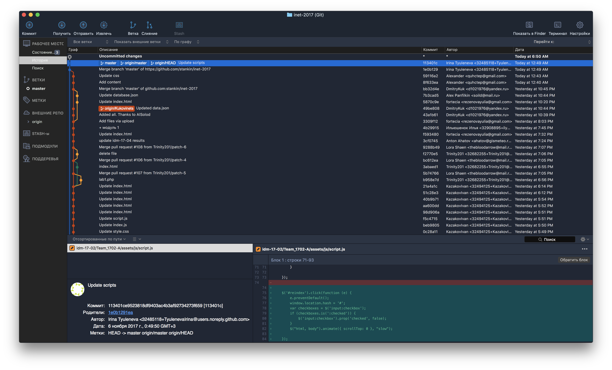
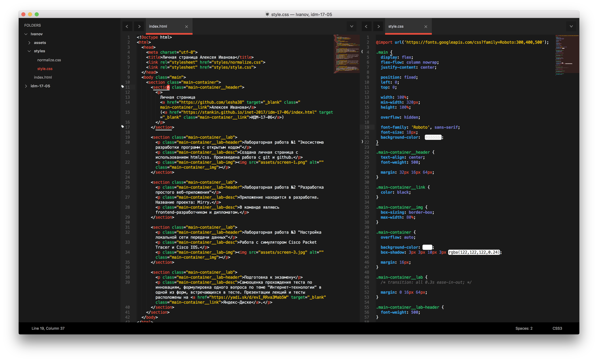

Личная страница Алексея Иванова (ИДМ-17-06)
Лабораторная работа №1 "Экосистема разработки программ с открытым кодом"
Создана личная страница с использованием html/css. Произведена работа с git и github.

Лабораторная работа №2 "Разработка простого веб-приложения"
Приложение находится в разработке. Название проекта: Mirry.
В команде являюсь frontend-разработчиком и дипломатом.

Лабораторная работа №3 "Настройка локальной сети передачи данных"
Работа с симулятором Cisco Packet Tracer и Cisco IOS.

Подготовка к экзамену
Самооценка прохождения теста по инновациям, формулировка одного вопроса по теме "Интернет-технологии" в одной из форм, встречающихся в тесте. Презентации лекций и тесты расположены на Яндекс-Диске.